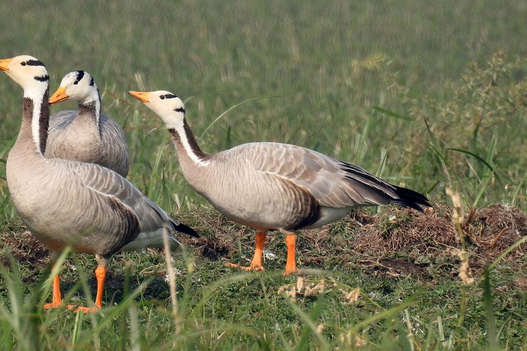

राजहंसBar-headed Goose
Anser indicus · Anatidae · BRD-0082

- Scientific name
- Anser indicus (Latham, 1790)
- Family
- Anatidae
- Hindi
- राजहंस / कर्रे हंस
- Local names
- rajhans, raj hans, hans, kareyi hans, birwa
- Status here
- native
- Movement
- Winter visitor
- IUCN
- LC
- Review
- audited and independently read
When to look कब देखें
Winter visitor शीतकालीन प्रवासी. Expected mainly in November, December, January, February, March.
Arrives in November–December from high-altitude breeding grounds in Central Asia; departs by March. Expected primarily along the Ghaghra and Rapti river systems. All migrants and visitors →
Uses and possibilities उपयोग और संभावनाएँ
Guide: Where the winter birds are: Bakhira, Parvati Arga and the Ayodhya jheels
Drawn from the documented uses in the profile below, where each is labelled traditional, current or a research lead. All uses →
Tell it apart from इनसे अलग पहचानें
राजहंस / Bar-headed Goose
Anser indicus (Latham, 1790) — Anatidae
राजहंस — ठंड के मौसम (नवंबर से मार्च) में मध्य एशिया से भारत आने वाली एक बड़ी, सफेद और भूरी हंस, जो पूर्वी उत्तर प्रदेश में मुख्यतः घाघरा और राप्ती नदियों के पास पाई जाती है। इसके सिर पर दो काली पट्टियाँ होती हैं — जिससे इसे "bar-headed" कहते हैं। यह विश्व का सबसे ऊँचाई पर उड़ने वाली पक्षी है, और हिमालय को पार करके भारत पहुँचता है।
Quick Identification त्वरित पहचान
| Feature | Description |
|---|---|
| Size | Large goose; 71–76 cm long |
| Plumage | Pale grey-buff body; white head and neck with two dark bars |
| Head | Distinctive white with two bold black bars — one on the crown, one on the nape |
| Bill | Orange-yellow with a black tip |
| Legs and feet | Orange-yellow |
| Behaviour | Grazes on land; strong, direct flight |
| Seasonality | Winter visitor only (November–March) |
Field tip: A large, pale goose with a white head marked by two bold black bars, on lakes and rivers in winter — is a Bar-headed Goose. This striking head pattern is unmistakable. Larger and paler than most other winter geese.
हिंदी — कैसे पहचानें:
ठंड का मेहमान हंस — सर्दी में ही दिखता है।
सफेद सिर पर दो काली पट्टियाँ।
नारंगी चोंच और पैर।
सामान्यतः नदियों के पास बड़े झुंड में।
Morphology आकारिकी
Biometrics:
| Measurement | Range |
|---|---|
| Total length | 710–760 mm |
| Wing (flattened chord) | 430–480 mm |
| Tail | 140–170 mm |
| Bill | 45–55 mm |
| Tarsus | 60–75 mm |
| Weight | 1600–2500 g |
Size: 71–76 cm long; wingspan 150–180 cm. Weight 1600–2700 g. One of the largest geese in the region.
Plumage: Head and neck white. Body pale buff-grey. Upper back and wings darker. Rump white. The most distinctive feature is the pair of bold black bars — one on the crown (sometimes continuous across the forehead) and one on the nape extending down the upper neck.
Bill: Orange-yellow with a black tip. Relatively short and thick compared to other geese.
Legs and feet: Orange-yellow; long and strong, adapted for grazing.
Eyes: Dark iris; small.
Sexes: Identical or females slightly smaller and duller. Juveniles lack the bold head bars; bars are buff-brown instead of black.
Vocalisations. Two main call types:
- Flight and contact call: A loud, honking — aang-aang or konk-konk — given in flight and at roosts; frequency 0.5–2.0 kHz.
- Alarm call: Sharp, loud honking when disturbed or taking off.
हिंदी: तेज़ गाँव जैसा कूकना। झुंड में आवाज़ें सुनाई देती हैं।
Ecological Role पारिस्थितिक भूमिका
Grazer and herbivore: Bar-headed Geese are primarily grazers, feeding on:
- Aquatic and wetland grasses
- Winter cereals (wheat, barley) in agricultural fields
- Sedges and other wetland vegetation
- Occasionally aquatic invertebrates and seeds
Grazing impact: Large flocks can consume significant amounts of vegetation in wetlands and adjacent fields. In some areas, damage to newly sown winter crops is reported.
Prey of: Eagles and large predators during migration and wintering, particularly jackals and hyenas.
Ecological role: Returns nutrient-rich droppings to winter habitat, enriching nutrient cycling in wetlands and grasslands.
हिंदी: घास और अनाज खाता है। सर्दियों में भारत आकर चरता है।
Life Cycle / Phenology जीवन चक्र
Winter visitor: Arrives November–December; departs by March–April. Does not breed in India.
Breeding range: High plateaus of Central Asia — Tibet, Mongolia, Kazakhstan. Breeds March–July at elevation 3,500–5,500 m.
Migration: One of the most remarkable migrations on Earth — flies over the Himalayas at altitudes up to 9,000 m. Journey takes 3–5 days.
Wintering: November–March in India. Concentrates at large lakes and river systems.
Roosting: Nocturnal at water; diurnal movement to and from feeding areas. Returns to the same water bodies and feeding areas year after year.
हिंदी: नवंबर में आता है, मार्च तक चला जाता है। हिमालय को उड़कर पार करता है। यह पृथ्वी का सबसे ऊँचाई पर उड़ने वाला पक्षी है।
Prey भोजन
| Prey | Hindi | Capture Method |
|---|---|---|
| Wetland grasses | तालाब की घास | Grazing on land and water margins |
| Winter cereals | सर्दियों की फसल | Gleaning in harvested and sown fields |
| Sedges and rushes | सरकंडे | Grazing at wetland edges |
| Aquatic vegetation | जलीय पौधे | Dabbling and upending in shallow water |
हिंदी: मुख्यतः घास चरता है।
Conservation Status संरक्षण स्थिति
IUCN Status: Least Concern (LC)
Wildlife Protection Act, 1972: Listed under Schedule IV (Protected) of the Wildlife (Protection) Act, 1972, as amended in 2022. Hunting Bar-headed Geese is illegal in India.
Threats: Loss of wintering habitat to drainage and conversion; wetland pollution; lead ammunition in wetlands; loss of traditional roost sites to development.
Population status: Global populations are stable and increasing. The species has benefited from protection and management of key wintering sites.
Conservation notes: Only occurs in India during winter, making the species dependent on international conservation cooperation.
हिंदी: कानून में संरक्षित है।
Agricultural / Human Relevance कृषि और मानव संबंध
Crop damage: Large flocks can cause significant damage to newly sown winter wheat and barley fields by grazing. In some years, farmers report substantial losses.
Mitigation strategies: Some areas use non-lethal deterrence (noise, scarecrows) to reduce crop damage while protecting the birds.
Cultural significance: Known locally as the "king of geese" (rajhans) due to its large size and high-altitude abilities. Mentioned in Indian classical texts and folklore.
हिंदी: कभी-कभी सर्दियों की फसल को नुकसान पहुँचा सकते हैं। पर यह संरक्षित पक्षी है।
Expected Locally स्थानीय रूप से अपेक्षित
Not a field record. Written from published accounts for eastern Uttar Pradesh. Expected only in winter (November–March) in specific locations.
अभी तक स्थानीय पुष्टि नहीं। यह विवरण प्रकाशित स्रोतों से है।
The Bar-headed Goose is primarily a winter visitor to the Ghaghra and Rapti river systems in eastern UP. Large flocks (50–500+ individuals) are regularly reported at key wintering sites along these rivers and associated wetlands from November through March. The nearest confirmed records are from the Ghaghra river between Ghazipur and Balia districts (approximately 100 km from the Basti district border). The species occurs in Basti district only opportunistically during hard winters when larger water bodies freeze upstream, forcing birds to seek unfrozen stretches in the lower Gangetic plain.
Distribution वितरण
Global range: Breeds in Central Asia (Mongolia, Tibet, Kazakhstan); winters across the Indian subcontinent, from the Gangetic plains to the Deccan.
In India: Widespread winter visitor across northern and central India, particularly concentrated in the northern plains and along major river systems.
In Uttar Pradesh: Important winter visitor throughout the state, particularly concentrated along the Ganges, Ghaghra, and Rapti river systems.
In Basti district / eastern UP: Winter visitor to the Ghaghra and Rapti river systems, particularly along river margins and adjacent wetlands. Occurs mostly November–March, with peak numbers December–February. Less regular in the central parts of the district; most common along river borders.
Research Questions शोध प्रश्न
Anyone can investigate these | कोई भी इन प्रश्नों की जाँच कर सकता है
- When do Bar-headed Geese arrive and depart in your area? / कब आते हैं और कब जाते हैं? — Monitor key roost sites November–April.
- What is the population size and trend? / कितनी संख्या में आते हैं? — Count at roosts monthly.
- Which river stretches are used most heavily? / किन नदी के किनारे रहते हैं? — Map goose locations throughout winter.
- How significant is crop damage in your area? / फसल को कितना नुकसान पहुँचाते हैं? — Interview farmers; estimate damage.
- Are the same individuals/flocks returning each winter? / क्या हर साल एक ही हंस आते हैं? — Note site fidelity over multiple winters if possible.
Similar Species मिलती-जुलती प्रजातियाँ
| Species | How to tell apart | हिंदी |
|---|---|---|
| Greylag Goose (Anser anser) | Larger; uniform brown-grey plumage; no head bars | बड़ा, भूरा, कोई पट्टी नहीं |
| Greater White-fronted Goose (Anser albifrons) | Smaller; white forehead; dark body with barring | सफेद माथा, काली पट्टियों वाला |
| Spot-billed Duck (Anas poecilorhyncha) | Smaller; duck not goose; spotted bill; different structure | बतख, हंस नहीं |
Field rule: A large pale goose with a striking white head marked by two bold black bars, at rivers in winter — is a Bar-headed Goose. The head pattern is diagnostic and unmistakable.
Taxonomy & Classification वर्गीकरण
Original description. Anser indicus was described by John Latham in 1790 in his Index Ornithologicus as the "Indian Goose". Type locality: India. The species epithet "indicus" refers to India, where it winters.
Subspecies. Monotypic — no subspecies are currently recognised.
Family and order placement. Order Anseriformes, family Anatidae (ducks, geese, swans), containing approximately 150 species. The genus Anser contains the "grey geese" of the Northern Hemisphere.
Phylogenetic notes. Anser indicus is sister to the Greylag Goose (A. anser). The genus Anser is monophyletic and appears to be a relatively recent Holarctic radiation.
IUCN status rationale. Assessed as Least Concern (LC). The global population is large, stable, and increasing. The species has benefited from protection and is expanding its range and population in many areas. It is one of the conservation success stories among Central Asian waterfowl.
Photo Gallery फोटो गैलरी
फोटो निर्देश: नदी के किनारे सर्दियों में (नवंबर-मार्च) देखा जा सकता है। सिर पर काली पट्टियों को स्पष्ट करने वाली फोटो ज़रूरी है।
Photos needed आवश्यक फोटो
- [ ] Flock on water showing distinctive head pattern (झुंड पानी पर)
- [ ] Close-up of head showing bar pattern (सिर क्लोज़-अप)
- [ ] In flight showing pale body (उड़ान में)
- [ ] Grazing on land near river (नदी के किनारे चरते हुए)
- [ ] Individual portrait showing all field marks (पूरा पक्षी)
No photos yet — add field photos to media/species/bar_headed_goose/ and run node scripts/sync_photos.js.
Atlas Connections संबंधित प्रजातियाँ
- Indian Spot-billed Duck — sympatric winter visitor; shares some habitats
- Sarus Crane — may share river habitats in winter
References संदर्भ
- Latham, J. (1790). Index Ornithologicus. Vol. 2. Sumtibus Sowerby, London. [original description]
- Ali, S. & Ripley, S.D. (1987). Handbook of the Birds of India and Pakistan. Vol. 2. Oxford University Press, New Delhi.
- Grimmett, R., Inskipp, C. & Inskipp, T. (2011). Birds of the Indian Subcontinent. 2nd ed. Christopher Helm, London.
- Bishop, C.M., Spivey, R.J., Hawkes, L.A., et al. (2015). The roller coaster flight strategy of bar-headed geese conserves energy during high-altitude flight. Science, 347(6224), 250–254.
- BirdLife International (2023). Anser indicus. IUCN Red List of Threatened Species.
- GBIF Occurrence Data — Anser indicus, Uttar Pradesh (2024).
Source file: species/fauna/birds/bar_headed_goose.md